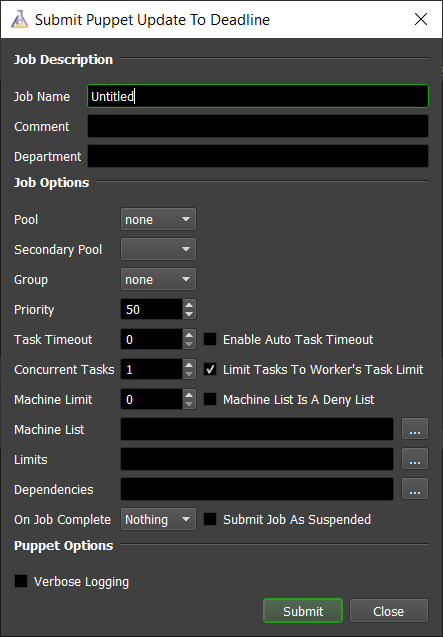
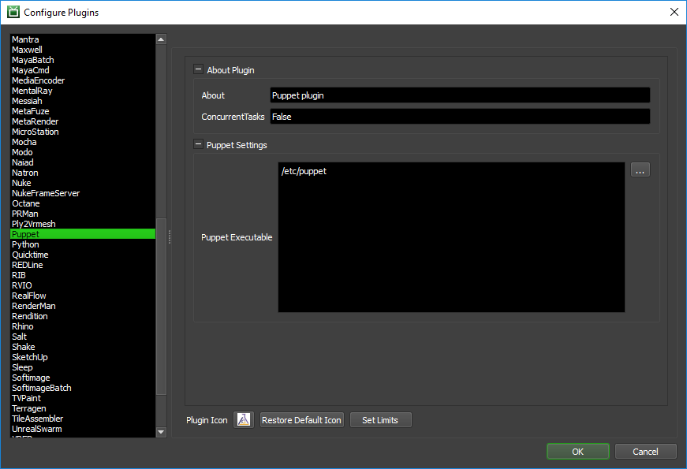

Puppet¶
Overview¶
Puppet is a management system that can be used to keep applications and plugins synched across your render nodes. See the Puppet Labs Website for more information.
The Puppet application plugin that ships with Deadline can be used to run a Puppet update on a Worker as a Maintenance Job, thus allowing you to schedule a job which keeps your render nodes in software sync.
Note that Puppet must already be configured to work outside of Deadline. Once your Puppet system is set up, you can then submit a Puppet job for Deadline to automatically trigger Puppet updates.
Job Submission¶
You can submit Puppet update jobs from the Monitor.
Submission Options¶
The general Deadline options are explained in the Job Submission documentation. The Puppet specific options are:
Verbose Output: Prints very detailed output when the job is run.
Plugin Configuration¶
You can configure the Puppet plugin settings from the Monitor. While in power user mode, select Tools -> Configure Plugins and select the Puppet plugin from the list on the left.
Options
Puppet Batch: The path to the Puppet executable file. Enter alternative paths on separate lines.
FAQ¶
Is PuppetLabs Puppet supported in Deadline?
Yes, both as a Maintenance Job and also as a Worker centric event plugin.

{kind=link}
{kind=link}